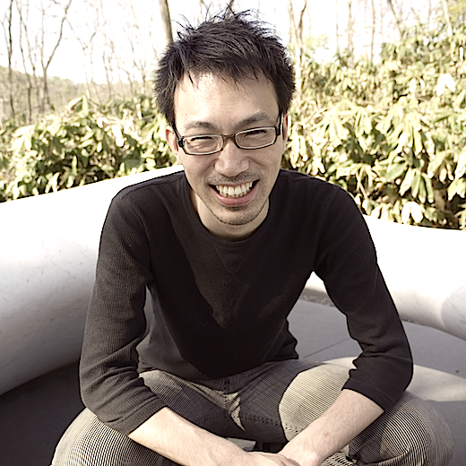
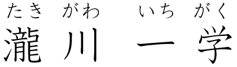

TAKIGAWA, Ichigaku
- 東京大学 新領域創成科学研究科メディカル情報生命専攻
- 北海道大学 化学反応創成研究拠点(WPI-ICReDD)
研究室
情報
- Author Profile (Google Scholar)
- ResearcherID (Thomson Reuters)
- researchmap (JST)
- ORCID | DBLP | PubMed | scopus | semanticscholar | wikidata
Highlight
- Top reviewer (Top 10%), NeurIPS 2023. link
- Top reviewer (Top 10%), NeurIPS 2022. link
- Distinguished PC (Top 3%), IJCAI-ECAI 2022. link
- Outstanding reviewer (Top 10%), ICML 2022. link
- Highlighted reviewer, ICLR 2022. link
- Expert reviewer, ICML 2021. link
- Top reviewer (Top 33%), ICML 2020. link
- Best reviewer, NeurIPS 2019. link
- Active reviewer, IJCAI 2019. link
- Top reviewer (Top 30%), NeurIPS 2018. link
Interviews
- 情報科学研究科准教授・瀧川一学 [寄附で応援！北大の研究 Vol.4]
- 情報科学研究科准教授・瀧川一学[情報科学研究科・ネットジャーナル４８]
- 機械学習研究者・瀧川一学さん [北大人図鑑 No.5] (YouTube)
Talk
Work
- DrawMolToMPL: RDKit mol drawing with matplotlib
https://github.com/itakigawa/mpl_rdkit_utils - ChemProp in PyTorch Geometric
https://github.com/itakigawa/pyg_chemprop - Listing all frequent subgraph-substring pairs in graph-string pairs
https://github.com/itakigawa/grasp
関係プロジェクト
- 人工知能学会 人工知能基本問題研究会(SIG-FPAI)
- 科研費 基盤研究(C) グラフ表現学習の転移性・構成性の獲得とその実践
- 科研費 学術変革領域(A) 社会変革の源泉となる革新的アルゴリズム基盤の創出と体系化 (領域代表: 湊真一)
- 科研費 基盤研究(S) 非平衡過程の実空間観察手法の転換：TEMによる溶液からの核生成過程の解明 (代表: 木村勇気)
- 科研費 基盤研究(A) 離散構造処理系に基づく列挙と最適化の統合的技法の研究 (代表: 湊 真一)
- 科研費 挑戦的研究(開拓) 化学における外挿探索を可能とする機械学習手法の開発と実証 (代表: 鳥屋尾 隆)
- 内閣府 官民研究開発投資拡大プログラム(PRISM): 新薬創出を加速する人工知能の開発
- JST-CREST 学習/数理モデルに基づく時空間展開型アーキテクチャの創出と応用 (代表: 本村真人)
- JST-CREST 触媒インフォマティクスの創成のための実験・理論・データ科学研究 (代表: 清水研一)
- 世界トップレベル研究拠点プログラム 化学反応創成研究拠点(WPI-ICReDD) (代表: 前田 理)
- 科研費 基盤研究(S) 離散構造処理系の基盤アルゴリズムの研究 (代表: 湊 真一)
- 科研費 新学術領域研究 シンギュラリティ生物学 (領域代表: 永井健治)
- JST-さきがけ 理論・実験・計算科学とデータ科学が連携・融合した先進的マテリアルズインフォマティクスのための基盤技術の構築 (総括: 常行 真司)
- 科研費 新学術領域研究 スパースモデリングの深化と高次元データ駆動科学の創成 (領域代表: 岡田真人) 平成25年度〜29年度
学歴
- 2004: 博士(工学), 北海道大学 工学研究科
- 2001: 修士(工学), 北海道大学 工学研究科
- 1999: 学士(工学), 北海道大学 工学部
職歴
- 2025.04 - : 教授, 新領域創成科学研究科 メディカル情報生命専攻
- 2023.02 - : 特任教授, 化学反応創成研究拠点, 北海道大学
- 2023.02 - 2025.03: 特定教授, 国際高等教育院 附属データ科学イノベーション教育研究センター, 京都大学
- 2023.02 - 2025.03: 客員研究員, 革新知能統合研究センター, 理化学研究所
- 2019.04 - 2023.01: 特任准教授, 化学反応創成研究拠点, 北海道大学
- 2019.04 - 2023.01: 研究員, 革新知能統合研究センター, 理化学研究所
- 2014.10 - 2019.03: 准教授, 情報科学研究科, 北海道大学
- 2012.01 - 2014.10: 特任助教(テニュアトラック), 創成研究機構, 北海道大学
- 2010.05 - 2010.08: 客員研究員, ボストン大学バイオインフォマティクスプログラム
- 2007.04 - 2011.12: 助教, 京都大学 薬学研究科 医薬創成情報科学専攻
- 2005.08 - 2011.12: 助教, 京都大学 化学研究所 バイオインフォマティクスセンター
- 2005.04 - 2005.07: 特任助教 (COE), 京都大学 化学研究所 バイオインフォマティクスセンター
- 2004.04 - 2005.03: 博士研究員 (COE), 北海道大学 情報科学研究科
- 2002.04 - 2003.02: 非常勤講師, 札幌大学
- 2001.09 - 2001.09: 非常勤講師, 小樽商科大学
外部資金
- 2021.07 - 2025.03: 分担, 科学研究費補助金 挑戦的研究(開拓) #21375759 (文部科学省)
化学における外挿探索を可能とする機械学習手法の開発と実証 (代表：鳥屋尾 隆) - 2021.04 - 2025.03: 代表, 科学研究費補助金 基盤研究(C) #21K12041 (文部科学省)
グラフ表現学習の転移性・構成性の獲得とその実践 - 2020.11 - 2025.03: 分担, 科学研究費補助金 学術変革領域(A) #20H05962 (文部科学省)
新しい概念に基づいたアルゴリズム・最適化の問題創出とその効率的求解方法の研究 (代表: 宇野 毅明) - 2020.09 - 2025.03: 分担, 科学研究費補助金 基盤研究(S) #20H00323 (文部科学省)
非平衡過程の実空間観察手法の転換：TEMによる溶液からの核生成過程の解明 (代表: 木村 勇気) - 2020.04 - 2025.03: 分担, 科学研究費補助金 基盤研究(A) #20H00605 (文部科学省)
離散構造処理系に基づく列挙と最適化の統合的技法の研究 (代表: 湊 真一) - 2020.04 - 2020.08: 分担, 科学研究費補助金 基盤研究(A) #20H00323 (文部科学省)
TEM直接観察による水溶液からの核生成過程の鍵因子の探索 (代表: 木村 勇気), 基盤S採択により終了 - 2018.04 - 2020.03: 分担, 科学研究費補助金 基盤研究(S) #15H05711 (文部科学省)
離散構造処理系の基盤アルゴリズムの研究 (代表: 湊 真一) - 2017.07 - 2021.03: 代表, 科学研究費補助金 挑戦的研究(萌芽) #17K19953 (文部科学省)
材料科学におけるデータ駆動型探索技術の確立 - 2017.04 - 2021.03: 代表, 科学研究費補助金 基盤研究(B) #17H01783 (文部科学省)
グラフデータの機械学習における特徴表現設計の体系化 - 2016.04 - 2017.03: 分担, 科学研究費補助金 挑戦的萌芽研究 #16K13852 (文部科学省)
第一原理機械学習計算手法の開発 (代表: 梅澤 直人), 代表者海外転出により終了 - 2015.12 - 2019.03: 代表, JST さきがけ #JPMJPR15N9 (科学技術振興機構)
大規模データに基づく電子物性予測のための深層学習技術の創出 - 2014.04 - 2017.03: 代表, 科学研究費補助金 基盤研究(C) #26330242 (文部科学省)
不均質なグラフ集合に対する教師付き学習系の設計 - 2014.04 - 2016.03: 代表, 科学研究費補助金 新学術領域研究 #26120503 (文部科学省)
疎性モデリングに基づく部分グラフ指示子の冗長性及び相関構造の分析 - 2013.04 - 2016.03: 分担, 科学研究費補助金 基盤研究(B) #25280079 (文部科学省)
巨大シーケンス内の類似繰り返し構造の分析 (代表: 中村篤祥) - 2011.04 - 2014.03: 代表, 科学研究費補助金 若手研究(B) #23710233 (文部科学省)
多階層ネットワークに基づく遺伝子間の非線形相互作用のモデル化と代謝解析への応用 - 2008.04 - 2011.03: 代表, 科学研究費補助金 若手研究(B) #20700134 (文部科学省)
部分的類似構造の重ね合わせに基づく不均質データの多義的探索法の開発 - 2007.10 - 2010.09: 分担, バイオインフォマティクス推進センター (BIRD) (科学技術振興機構)
創造的な生物・情報知識融合型の研究開発 (代表: 馬見塚 拓) - 2006.04 - 2008.03: 代表, 科学研究費補助金 若手研究(B) #10374597 (文部科学省)
計算幾何構造と適応サンプリングに基づく大規模生物情報処理に関する研究 - 2005.04 - 2006.05: 代表, 若手研究者スタートアップ研究費 (京都大学)
計算幾何構造と適応サンプリングに基づく大規模生物情報処理に関する研究
学生指導：修士論文 (北海道大学大学院情報科学研究科)
- 2018年度 確率的トピックによるr-近傍グラフ集合の特徴ベクトル化 (越野 沙耶佳)
- 2018年度 Graph Networkに基づく充足可能性問題の求解アルゴリズムの実証的検証 (渡辺 摩周)
- 2017年度 グラフ分類における特徴量探索空間の拡張 (岡崎 文哉)
- 2017年度 組成情報と要素特徴量の統合に基づく多元系触媒活性の予測 (鈴木 慶介)
- 2017年度 全部分グラフ指示子に基づく非線形グラフ分類回帰 (横山 侑政)
- 2016年度 ABS作動データを用いた分析による札幌市内の道路凍結の予測 (穐本 浩昇)
学生指導：卒業論文 (北海道大学工学部)
- 2018年度 Style Transferのための話者分類モデルを用いた音声テクスチャ抽出 (黒澤 隼人)
- 2018年度 非定常データストリームにおける適応的決定木に基づくアンサンブル学習 (菅原 優)
- 2018年度 正規表現と等価なSequence BDDの構築に基づくパターン照合 (瀧澤 涼介)
- 2018年度 化学反応ネットワークにおける最適反応経路候補の列挙 (中野 裕太)
- 2018年度 ランダム分割を用いたモデル木に基づく勾配ブースティング (松田 祐汰)
- 2017年度 グラフ畳み込みネットワークに基づく化合物データの特徴表現の学習 (菊地 翔馬)
- 2017年度 グラフ分類における部分グラフ特徴集合の確率的探索 (白川 稜)
- 2017年度 ハイパーパラメータ探索におけるメタ学習の有効性 (宮村 優介)
- 2017年度 木アンサンブルに基づく変数間交互作用の推定 (横山 祐也)
- 2016年度 系列二分決定グラフを用いた頻出部分グラフの圧縮表現 (奥山 葉月)
- 2016年度 定量的構造活性相関予測における化合物特徴表現の実験的検証 (越野 沙耶佳)
- 2015年度 Wildcardを許容した頻出部分グラフ列挙とその出力要約 (岡崎 文哉)
- 2015年度 全部分グラフ指示子に基づく決定木学習 (横山 侑政)
所属学会
- IEEE (The Institute for Electrical and Electronics Engineers), Senior Member
- ACM (Association for Computing Machinery)
- JSAI (The Japanese Society for Artificial Intelligence)
- JSBi (Japanese Society for Bioinformatics)
学会活動等
国内
- 第26回 情報論的学習理論ワークショップ (IBIS 2023), プログラム委員 (2023)
- 人工知能学会(JSAI) 人工知能基本問題研究会(SIG-FPAI) 幹事 (2015) 主幹事 (2016-2017) 主査 (2018-2019)
- 第21回 情報論的学習理論ワークショップ (IBIS 2018), プログラム委員 (2018)
- 第6回生命医薬情報学連合大会(IIBMP 2017), 実行委員 (2017)
- 人工知能学会(JSAI) 全国大会プログラム委員 (2013-2014)
- 電子情報通信学会 パターン認識・メディア理解研究会(PRMU) 専門委員 (2013-2014)
国際
- Area Chair, Neural Information Processing Systems (NeurIPS) 2025, San Diego, USA, Dec 9-Dec 15, 2024.
- Reviewer, The International Conference on Machine Learning (ICML) 2025, Vancouver, Canada, July 13-Jul 17, 2025.
- SPC, The International Joint Conference on Artificial Intelligence (IJCAI) 2025, Montreal, Canada, Aug 16-Aug 22, 2025.
- Reviewer, The International Conference on Learning Representations (ICLR) 2025, Singapore, Apr 24-28, 2025.
- Reviewer, The Annual AAAI Conference on Artificial Intelligence (AAAI) 2025, Philadelphia, USA, Feb 25-Mar 4, 2025.
- Area Chair, Neural Information Processing Systems (NeurIPS) 2024, Vancouver, Canada, Dec 9-Dec 15, 2024.
- Reviewer (Top reviewer, Top 10%), Neural Information Processing Systems (NeurIPS) 2023, New Orleans, USA, Dec 11-Dec 17, 2023.
- Reviewer (Top reviewer, Top 10%), Neural Information Processing Systems (NeurIPS) 2022, New Orleans, USA, Nov 28-Dec 9, 2022.
- Program Committee (Distinguised PC, Top 3%), The 31st International Joint Conference on Artificial Intelligence (IJCAI-ECAI 2022), Vienna, Austria, July 23-29, 2022.
- Reviewer (Outstanding reviewer, Top 10%), The International Conference on Machine Learning (ICML) 2022, Baltimore, USA, July 17-23, 2022.
- Reviewer (Highlighted reviewer), The International Conference on Learning Representations (ICLR 2022), Virtual, Apr 25-29, 2022.
- Reviewer, Neural Information Processing Systems (NeurIPS) 2021, Virtual, Dec 6-14, 2021.
- Reviewer (Expert reviewer), The 38th International Conference on Machine Learnig (ICML 2021), Jul 18-24, Virtual, 2021
- Program Committee, The 30th International Joint Conference on Artificial Intelligence (IJCAI 2021), Aug 21-26, Montreal, Canada, 2021
- Reviewer, International Conference on Learning Representations (ICLR2021), Vienna, Austria, May 4-8, 2021
- Reviewer, The 24th International Conference on Artificial Intelligence and Statistics (AISTATS 2021), Apr 13-15, San Diego, California, USA, 2021
- Reviewer, Neural Information Processing Systems (NeurIPS) 2020, Vancouver, Canada, Dec 6-12, 2020.
- Reviewer (Top reviewer, top 33%), The Thirty-seventh International Conference on Machine Learning (ICML 2020), Vienna, Austria, July 12-18, 2020.
- Reviewer, The International Conference on Learning Representations (ICLR 2020), Addis Ababa, Ethiopia, April 27-30, 2020.
- Reviewer (Best reviewer), Neural Information Processing Systems (NeurIPS) 2019, Vancouver, Canada, December 9-14, 2019.
- Reviewer (Active reviewer), The 28th International Joint Conference on Artificial Intelligence (IJCAI 2019), Macao, China, August 10-16, 2019.
- Program Committee, The 2019 Uncertainty in AI Conference (UAI 2019), Tel Aviv, Israel, July 22-25, 2019.
- Reviewer, The 36th International Conference on Machine Learning (ICML 2019), Long Beach, USA, June 10-15, 2019.
- Program Committee, The 7th International Conference on Learning Representations (ICLR 2019), New Orleans, USA, May 06-09, 2019.
- Program Committee, The 23rd Pacific-Asia Conference on Knowledge Discovery and Data Mining (PAKDD 2019), Macau, China, April 14-17, 2019.
- Program Committee, The 33rd AAAI Conference on Artificial Intelligence (AAAI 2019), Honolulu, Hawaii, USA, January 27 - February 1, 2019.
- Program Committee, The 2018 IEEE International Conference on Big Data (IEEE BigData 2018), Seattle, USA, December 10-13, 2018.
- Reviewer (Top reviewer, top 30%), Neural Information Processing Systems (NeurIPS) 2018, Montreal, Canada, December 3-8, 2018.
- Program Committee, The 10th Asian Conference on Machine Learning (ACML 2018), Beijing, China, November 14-16, 2018.
- Program Committee, The 35th International Conference on Machine Learning (ICML 2018), Stockholm, Sweden, July 10-15, 2018.
- Program Committee, The 27th International Joint Conference on Artificial Intelligence and the 23rd European Conference on Artificial Intelligence (IJCAI-ECAI 2018), Stockholm, Sweden, July 13-19, 2018.
- Reviewer, The 6th International Conference on Learning Representations (ICLR 2018), Vancouver, BC, Canada, April 30 - May 3, 2018.
- Technical Program Committee, The 22nd Pacific-Asia Conference on Knowledge Discovery and Data Mining (PAKDD 2018), Melbourne, Australia, June 3-6, 2018.
- Program Committee, The 16th Asia Pacific Bioinformatics Conference (APBC2018), Yokohama, Japan, January 15-17, 2018.
- Program Committee, The 31st Annual Conference on Neural Information Processing Systems (NIPS 2017), Long Beach, CA, USA, December 4-9, 2017.
- Program Committee, The 34th International Conference on Machine Learning (ICML 2017), Sydney, Australia, August 6-11, 2017.
- Program Committee, The 9th Asian Conference on Machine Learning (ACML 2017), Seoul, Korea, November 15 - 17, 2017.
- Program Committee, The Pacific-Asia Conference on Knowledge Discovery and Data Mining (PAKDD 2017), Jeju, South Korea, May 23-26, 2017.
- Co-Organizer, The 6th Charles Warren Workshop 2016, Sapporo, Hokkaido, Japan, August 24-26, 2016.
- Program Committee, The 8th Asian Conference on Machine Learning (ACML 2016), Hamilton, New Zealand, November 16-18 2016.
- Program Committee, The 20th Pacific Asia Conference on Knowledge Discovery and Data Mining (PAKDD 2016), Auckland, New Zealand, Apr 19-22, 2016.
- Program Committee, The 7th Asian Conference on Machine Learning (ACML 2015), Hong Kong, Nov 20-22, 2015.
- Reviewer, The Annual Conference on Neural Information Processing Systems (NIPS 2014) Montréal CANADA, December 8-13, 2015.
- Program Committee, The 6th Asian Conference on Machine Learning (ACML 2014), Nha Trang, Vietnam, Nov 26-28, 2014.
- Program Committee, SIAM Conference on Data Mining (SDM14), Philadelphia, Pennsylvania, USA, Apr 24-26, 2014.
- Program Committee, The 28th Annual Conference of Japanese Society for Artificial Intelligence, Matsuyama, Japan, May 12-15, 2014.
- Organizer, 2013 International Workshop on Machine Learning and Applications to Biology (MLAB Sapporo 2013), Sapporo, Hokkaido, Japan, August 5-6, 2013.
- Program Committee, SIAM Conference on Data Mining (SDM13), Austin, Texas, USA, May 2 – May 4, 2013.
- Program Committee, The 27th Annual Conference of Japanese Society for Artificial Intelligence, Toyama, Japan, June 4-7, 2013.
- Organizer, 2012 Sapporo Workshop on Machine Learning and Applications to Biology (MLAB Sapporo 2012), Sapporo, Hokkaido, Japan, August 6-7, 2012.
- Local Organizing Committee, ICR Symposium to Celebrate the Bioinformatics Center's 10 Year Anniversary, Uji, Kyoto, Japan, August 29, 2011.